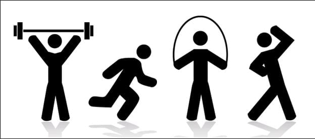

What to know about exercise and how to start

Exercise involves engaging in physical activity and increasing the heart rate beyond resting levels. It is an important part of preserving physical and mental health.
Whether people engage in light exercise, such as going for a walk, or high intensity activities, for example, uphill cycling or weight training, regular exercise provides a huge range of benefits for the body and mind.
Taking part in exercise of any intensity every day is essential for preventing a range of diseases and other health issues.
In this article, we explain the different types of exercise and their benefits, as well as the considerations for designing a fitness regime.
Types and benefits
Risks of not exercising
Finding time to exercise
Tips for starting
lotuscare22@gmail.com

+61 123 456 789